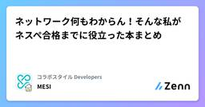

コラボスタイル Developersのフィード
https://zenn.dev/p/collabostyle
「ワークスタイルの未来を切り拓く」を理念に掲げ、リアルとデジタルの2つの働く場に向けた事業展開に留まらず、自社が率先して新しいワークスタイルに挑戦し、発信を行うことでワークスタイルの未来を切り拓いていきます。
フィード

ネットワーク何もわからん！そんな私がネスペ合格までに役立った本まとめ 54
54
コラボスタイル Developersのフィード
どうもお疲れ様です。MESIです。私は普段アプリケーション開発をメインでやっています。そのためネットワーク機器を構築したり設定したりする機会はほとんどなく、エンジニア2年目くらいまではネットワークについてほとんど知識がありませんでした。当時はプライベートIPアドレスとグローバルIPアドレスの違いもよくわからないというレベルでした。しかし業務でクラウドやインフラに触れる機会が増え、ネットワークの知識も必要だと感じるようになりました。そこでネットワークの勉強を始めました。その後、地道に勉強を続けた結果、最終的には ネットワークスペシャリスト試験に合格するレベル まで知識を身に...
7日前

Google Apps Scriptで「今日誰休み？」をゼロにする。休暇連絡をSlackへ集約
コラボスタイル Developersのフィード
現在の私の所属組織では、Slackで休暇報告を各自がバラバラに行うスタイルです。人数も多いので、まとまった情報として流れてきたらいいなーと思い、試しに作ってみました。完成イメージ： 実装した機能2段階リマインド: 業務調整がしやすい「1週間前」と、最終確認の「前日」の2回、定時に通知。複数キーワード対応: 有給、代休、振休、半休など、入力のゆらぎを網羅。情報の集約: 複数人の予定があっても、Slackへの通知は1通のメッセージにスッキリまとめます。 技術スタックGoogle Apps Script (GAS)Google Calendar APISlack...
9日前
JAWS DAYS 2026 参加記録
コラボスタイル Developersのフィード
先日JAWS DAYS 2026に参加してきたため、ブース対応の感想や一部の視聴セッションの感想を記載していきます。 ブース対応今回は、コラボスタイルのメンバーとしてのAI駆動開発のすごろく体験のブース対応を経験させてもらいました。ブース対応は僕の中では初の経験だったので色々な不安はあったものの、結果的に良い経験ができたと感じました。初対面の場面では緊張してしまう方ですが、ブースに立ち寄ってくれる方はシンプルにすごろく体験を楽しんでいただいたため、こちらもゲームマスターとしてすごろくを一緒に楽しむ気持ちで対応することができました。すごろく内で発生するミッションを通して、参加者...
11日前
初参加・初ブース・初JAWS！「初めて尽くし」のJAWS DAYS 2026 参加ログ
コラボスタイル Developersのフィード
こんにちは！JAWS DAYS 2026に、弊社のダイヤモンドサポーター出展スタッフとして参加してきました。実は私、今回がイベント初参加。それどころかブースに立つのも初めてという「初めて尽くし」の1日でした。期待半分、緊張半分で挑んだ当日の様子を振り返ります。 目標参加するにあたり、自分の中で3つの目標を立てていました。「楽しむこと」を最優先に ： イベントへの恐怖心を克服し、次へ繋げる。知見を広げる ： セッションや外部の方との交流を通じて、外の世界を知る。ブース運営の完遂 ： 万全の準備で、来場者の方をしっかりお迎えする。 参加したセッション 1. ...
11日前
JAWS DAYS 2026 参加レポート
コラボスタイル Developersのフィード
先日、親子 or ペアワークショップ体験記を公開しました。こちらは身内を呼んでの参加のため個人の活動でしたが、それ以外にも弊社が出していたブースと参加したものについてのレポートです。 企業出展JAWS Days 2026では私の所属するコラボスタイルはダイヤモンドサポーターとして参加をしていました。弊社のブースでは、AI駆動開発すごろくと会社のカルチャーについて展示させていただいていました。ロールステッカーや、キースイッチのキーホルダーをノベルティとして配布をさせていただきました。担当者が頑張って作ってくれていたため、クオリティも高くて皆さんに喜んでもらえていました。h...
11日前
JAWS UG 大阪 AIDLC実践入門参加レポート
コラボスタイル Developersのフィード
2026年3月4日に行われたJAWS UG 大阪 AIDLC実践入門に参加をしてきました！普段広島在住のため、大阪のJAWS UGにはこれまで参加したことはありませんでしたが、以前に社内のワークショップでお世話になった小西さんがファシリテータでAIDLCをモブでやるということで遠方から参加しました！ 全体の流れ最初にAIDLCの概要の説明をしていただいたのちに実際に参加者も交えてモブ的にAIDLC-workflowのプラグインを導入したClaude CodeとVSCodeで実践をしていくという流れでした。 ワークショップClaude Codeのプラグインはこちらを利用しま...
17日前
AI-DLC実践レポート：5日間の開発工程を3時間へ😲AIと創る次世代の開発スタイル
コラボスタイル Developersのフィード
1. AI-DLCとRPI：AIを主役にする「新しい開発のカタチ」AI-DLC（AI駆動開発ライフサイクル）は、AIを単なる補助ツールとしてではなく、「開発プロセスの主役」 に据える手法です。最大の特徴は、「孤立した作業を、活気あるチーム作業へ転換する」ことにあります。AI-DLCでは、AIがルーティン作業を担うことで、人間は「必要な瞬間に集まり、その場で議論・意思決定する」という、チーム本来のコラボレーションに集中できるようになります。この「チームが常に同期する」枠組みの中に、AIの確実な作業手順であるRPIを組み合わせて進めました。AI-DLC（チームの動き）: 必要...
1ヶ月前
TiDB のメトリックスをNewrelicに連携設定
コラボスタイル Developersのフィード
はじめにTiDB Cloud Dedicated クラスターのメトリクスを New Relic に統合することで、他のアプリケーションやインフラと一元的に監視できるようになります。本記事では、2025年以降の標準であるクラスターレベルの統合手順を解説します。 前提条件TiDB Cloud: Dedicatedクラスターを利用していること（Serverlessなどは非対応）。権限: TiDB Cloudの Organization Owner または Project Owner 権限。New Relic: 有効なアカウントがあり、ダッシュボード作成権限があること。 ...
1ヶ月前
Claude CodeのAgent Teamsを簡単に使えるのか試してみた
コラボスタイル Developersのフィード
ついに公式にてOrchestrate teamsが実装されました😘https://code.claude.com/docs/ja/agent-teams 事前準備現在はまだ実験段階であり、デフォルトでは無効のため、settings.jsonファイルに以下の環境変数を指定する必要があります。setting.json{ "env": { "CLAUDE_CODE_EXPERIMENTAL_AGENT_TEAMS": "1" }} 利用方法公式リファレンスのサンプルを日本語化して送ってみました。CLIツールのTODOコメント追跡機能を設計したい。エ...
1ヶ月前
TCP参加レポート
コラボスタイル Developersのフィード
先日、TCP (Tech Challenge Party)に参加してきました。どのセッションも期待を大きく上回る内容でしたが、その中でも特に自分の心に刺さった学びや、今後のアクションについてまとめます。 1.問われる存在価値。生成AIの世界でエンジニアはどう生きる？https://f2ff.jp/introduction/11790?event_id=20260204基調講演の中で、最もハッとさせられたのがこの言葉です。「コーディングは手段であって、本当にやりたいことは良いプロダクトを作ることのはず」私はコーディングそのものが好きですし、目の前の技術的課題を解決することに...
1ヶ月前
スピードと品質を両立させる「KAIZEN大会2025」 — 過去の知見を仕組みに変えて、2026年の信頼を創る
コラボスタイル Developersのフィード
2025年もあっという間に終わろうとしています 終わりました…。2025年はリリースの規模が拡大し、多くの価値を届けることができた一方で、残念ながらいくつかのデグレ（デグレード）を発生させてしまいました。開発プロセスの中で一番防ぎたい、そして仕組みで未然に防ぐことができる「デグレ」をテーマに、年末の節目にチームみんなで 「KAIZEN大会2025」 を実施しました。そこで出た課題と、私たちが決めた「仕組み」への対策を共有します。 なぜこの会をしたのか個人を責めるのが目的ではありません。「個人の注意不足」で片付けず、開発フローや環境という「仕組み」で解決することを目指しました...
2ヶ月前
「この先どうなるんだろう？」と思っているエンジニアへ —— Tech Challenge Party 2026 に参加します
コラボスタイル Developersのフィード
最近こんなモヤモヤ、ありませんか？生成AIの進化が速すぎて、正直この先どうなるのか不安技術はそれなりにやってきたけど、キャリアの正解がわからないクラウドは触っているけど、仕組みをちゃんと理解できているか自信がない勉強会やカンファレンスに行きたい気持ちはあるけど、正直どれがいいのかわからない最近、こういう気持ちを抱えているエンジニアは多いんじゃないでしょうか。少なくとも、自分はそうです。そんな中で注目しているのが、Tech Challenge Party 2026 というイベントです。(略してTCPと呼ばれますがネットワーク用語ではありません。)この度、Tech ...
2ヶ月前
Resource Control」で本番・開発環境を安全に同居させ、Sysbenchで検証までやってみた
コラボスタイル Developersのフィード
はじめに：コストと安全性のジレンマ背景: TiDB Dedicated Cluster（専有クラスタ）の導入時、誰もが直面する課題。課題:「本番環境と開発環境は分けたい」→ クラスタを2つ借りるとコストが2倍になる（月額数十万円〜の増加）。「1つのクラスタに同居させる」→ 開発者が重いクエリ（SELECT *等）を投げると、本番環境が巻き添えで重くなる（ノイジーネイバー問題）。解決策:TiDB v7.1以降の Resource Control (Request Unit) 機能を使えば、追加コスト0円でこの問題を解決できる。今回は設定手順だけでなく、Sysbenchを使...
2ヶ月前
Tech Challenge Party 2026 に参加します！
コラボスタイル Developersのフィード
2026年2月4日に東京で開催されるTech Challenge Partyに参加します！ Tech Challenge Party とは一般社団法人ソフトウェア協会（SAJ）が主催する、エンジニアのための大規模なコミュニティイベントです。エンジニアが本来持つ好奇心・探究心を再燃させ、技術と挑戦を通じて仲間と学び合うコンセプトのイベントです。https://tcp.saj.or.jp/ 参加予定のセッション参加予定のセッションの中からいくつか気になっているセッションを紹介します！ コミュニティで世界を広げよう ～「はじめの一歩」を踏み出せるパネルディスカッション！～...
2ヶ月前
Tech Challenge Party 2026に参加します
コラボスタイル Developersのフィード
はじめに2026年2月4日に開催される Tech Challenge Party 2026 に参加します！技術カンファレンスやイベントには興味があるものの、これまで「コミュニティ」というものに対して、どこか敷居の高さや「すごい人たちばかりで場違いなんじゃないか」という不安を感じていました。しかし、今回のタイムテーブルを眺めていて、そんな私の背中を押してくれそうなセッションがいくつもあることに気づきました。今回は、私が特に注目している「コミュニティ」に関連する3つのセッションと、そこへの期待について書き留めておこうと思います。 参加予定のセッション今回は「技術的なHow-...
2ヶ月前
TCP2026に参加予定です
コラボスタイル Developersのフィード
TCP 2026に参加予定です。TCP 2026はスキル問わず参加可能なイベントです。基調講演やワークショップなどセッションの選択肢がとても多いので、何かしら気になるセッションが見つけられると思います。僕の参加するセッションは下記です。いくつかピックして紹介していきます。時間セッションタイトル12:00 - 12:45【基調講演】 問われる存在価値。生成AIの世界でエンジニアはどう生きる？12:45 - 13:30【基調講演】 技術力だけじゃない。キャリアと人生を劇的に変える「コミュニティ参加」という選択肢 〜国内4大コミュニティの事例から〜13:...
2ヶ月前
TCPに参加します！
コラボスタイル Developersのフィード
2月4日に東京でTech Challenge Party 2026が開催されます！このイベントは、弊社のメンバーが運営に携わっているほか、複数人のメンバーが登壇者として参加します！セッションはAIやコミュニティについての初心者からディープな上級者向けの講演、ワークショップもあり、聞くだけではなく、自分も参加できるイベントになっています。魅力的なセッションやワークショップが多くて、正直選びきれない…その中でも絶対に見たい！と思ったセッションについて紹介します！ Postmanワークショップ - MCP入門MCPは今後AIがさらに普及していくなかでSaaS企業としては避けては...
2ヶ月前
Tech Challenge Party 2026に参加します
コラボスタイル Developersのフィード
2026年2月4日に東京駅のKITTEで開催される「Tech Challenge Party 2026」に参加します。https://tcp.saj.or.jp/一般社団法人ソフトウェア協会（SAJ）が主催するエンジニア向けのコミュニティイベントで、基調講演やセッション、ワークショップ、懇親会など盛りだくさんの1日です。私が所属するコラボスタイルもゴールドスポンサーとして協賛しています。タイムテーブルを見て、特に楽しみにしているセッションを3つ紹介します。 コミュニティ参加という選択肢https://f2ff.jp/introduction/11791?event_id=20...
2ヶ月前
【TCP 2026】社内がTCP一色なので、行けない私の期待値をぶつけます！
コラボスタイル Developersのフィード
こんにちは！ 今、社内のエンジニアの間で最も熱いトピックといえば、2月4日に行われる 「Tech Challenge Party（TCP）」 です。https://tcp.saj.or.jp/実は今回、うちの開発メンバーの多くが参加するだけでなく、なんと運営に携わっているメンバーもいます！身近な仲間が作り上げ、仲間たちがこぞって参加するイベント……。そんな最高に盛り上がっている状況の中、私はどうしても都合がつかずお留守番です！！（泣）せめてもの応援として、「私ならこれを見たい！」という超個人的な注目ポイントを書き残しておきます！ 1.「コミュニティ未経験」な私に刺さった、人...
2ヶ月前
2/4のTech Challenge Party に参加してまいります〜
コラボスタイル Developersのフィード
Tech Challenge Party とはエンジニアであればスキル問わず、興味・関心があれば誰でも参加OKなイベントです。コミュニティ初心者向けの話から、AI系の濃い話まで幅広い基調講演・ワークショップがあります。公式サイト： https://tcp.saj.or.jp/平日開催ですが、東京でアクセス可能な方はぜひ〜！ 参加予定のプログラム選べません、助けて。候補が多すぎて無理（screenshot）絞りに絞って候補が3つなの無理です。3つと言わず全部出たいのですがね、、身体が1つしかないの悔やまれます。参加される方のアウトプットをお待ちしております。...
2ヶ月前